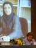

|
|
Tribune
Latest update – Monday 17 March 2014.
Articles in this section
- 4 November 2009

- 18 September 2009

by: Tara Nadjd Ahmadi
- 22 August 2009
By: Parvin Ardalan
- 31 July 2009

- 27 July 2009
- 5 July 2009

Shirin Ebadi Accepts Alexander Langer Award on Behalf of Nargess Mohammadi
- 5 July 2009
Statement in Support of Abdolfattah Soltani
- 22 June 2009
- 8 June 2009

By: Nikzad Zangeneh
- 29 May 2009
Statement
- 31 March 2009

By: Elahe Amani
- 25 February 2009

By: Zohreh Arzani
- 6 February 2009
Petition—We Need Your Support
- 28 November 2008
The Innovations of Women’s Organizations: Lessons Lost
By: Sussan Tahmasebi
- 25 November 2008

By: Parvin Ardalan
- 25 November 2008

by: Dr. Parisa Saed Alhashim
- 24 August 2008
Dolores Huerta’s Support of the Campaign
By: Azadeh Faramaziha
- 18 August 2008

- 30 May 2008

By: Azadeh Faramarziha
- 6 April 2008

By: Hoda Aminian
- 22 March 2008

One Million Signatures Campaign
By: Homa Maddah
- 15 March 2008
By Kaveh Mozaffari
- 7 March 2008

- 12 January 2008

Another visit to the family courts
- 5 January 2008

- 5 January 2008
- 2 January 2008

- 27 December 2007

- 8 December 2007
by Nafiseh Azad
- 5 December 2007
|